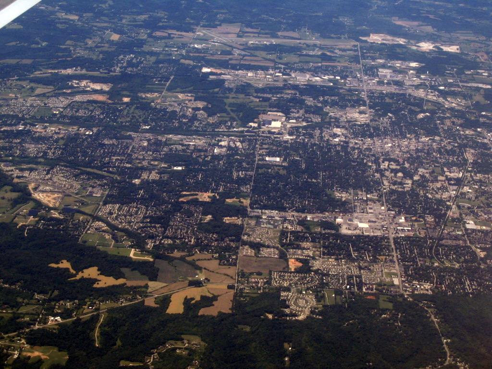

Bloomington is a city in and the county seat of Monroe County in the southern region of the U.S. state of Indiana. According to the Monroe County History Center, Bloomington is known as the "Gateway to Scenic Southern Indiana." The city was established in 1818 by a group of settlers from Kentucky, Tennessee, the Carolinas and Virginia who were so impressed with "a haven of blooms" that they called it Bloomington.
The population was 80,405 at the 2010 census.
Bloomington is the home to Indiana University Bloomington. Established in 1820, IU Bloomington has approximately 40,000 students and is the original and largest campus of Indiana University. In the 1991 book entitled The Campus as a Work of Art, author Thomas Gaines named the Bloomington campus one of the five most beautiful in America. Most of the campus buildings are built of Indiana limestone.
Bloomington is also the home of the Indiana University School of Public and Environmental Affairs, Indiana University Maurer School of Law, the Jacobs School of Music, the Kelley School of Business, the Kinsey Institute, the Indiana University School of Optometry, and the Midwest Proton Radiotherapy Institute.
Bloomington has been designated a Tree City for more than 20 years. The city was the site of the Academy Award-winning movie Breaking Away, featuring a reenactment of Indiana University's annual Little 500 bicycle race; Monroe County's famous rock quarries, (Rooftop), also figure in the movie.
